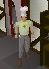
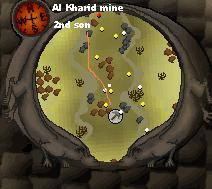
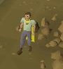
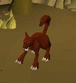
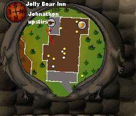
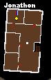
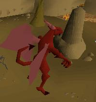
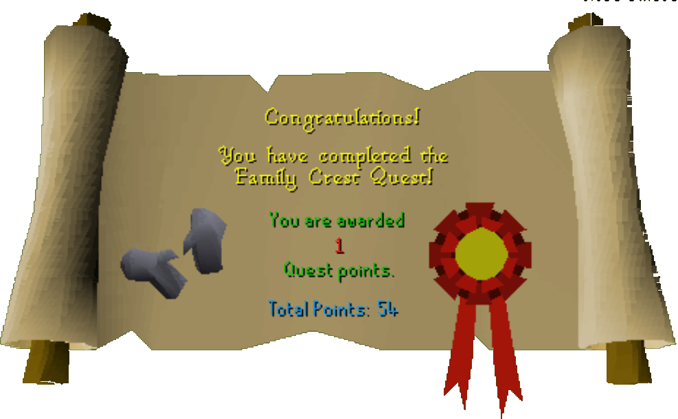

Family Crest
Description: The Fitzharmon family crest has gone missing, and the family honour has been lost. Can you find the crest and return it to Dimintheis in Varrock? There are 3 different rewards available, but you can only choose one, so choose carefully!Difficulty: Experienced
Length: Long
Items & Skills Needed:
- 40 Mining
- 40 Smithing
- 40 Crafting
- 59 Magic
Recommended:
- 50 Fishing (to obtain a swordfish)
- 45 Cooking (to cook a swordfish)
- Decent weapon and armor
Starting Location: Southeast of the East Varrock bank
Reward: 1 Quest point, a pair of Steel Gauntlets
Starting Out:
Go to the little house southeast of the East bank in Varrock. You should find a man named Dimintheis.


Talk to him about the family crest. You will need to talk to his sons who have the pieces of the crest. Do them in the order below.
First Son:


Talk to the Chef, who is located in a house just northeast of the Catherby bank. Talk to him, and he'll give you his piece of the crest if you provide the following cooked fish. Note: If you don't have a high enough Cooking or Fishing level, you can buy the fish instead.
Shrimp
Salmon
Tuna
Bass
Swordfish
Give him these fish and he will give you his piece of the crest. He should tell you about the second brother in Al Kharid. If he doesn't, talk to him again and he will tell you to go to the Gem Trader in Al Kharid.
Second Son:
Talk to the Gem Trader in Al Kharid. He will tell you about a man with a poncey yellow cape who hangs around the gold rock in the Scorpion Pit Chasm mine north of Al Kharid.
Talk to this Nobleman and he will tell you that if you want his part of the crest you will need to give him a ruby ring and a ruby necklace made from the finest gold. He will tell you that a dwarf named Boot knows where to find the finest gold.


Go talk to Boot who is in the Dwarven Mine. See the world map if you can't find Dwarven Mine. (Hint: it's north of Falador, down the ladder in a house on the Ice Mountain.) Boot can be found by going southwest. He will tell you where the finest gold is found. Bring a pickaxe, good armor, a good weapon, and probably some food as you will need to tank (or defeat, if you wish) two level 122 Hellhounds.


The finest gold is found in a dungeon east of Ardougne. To make this easy, go to East Ardougne and head southeast. You will find a ladder surrounded by archways. Go down the ladder where you will meet some level 42 hobgoblins (you do not need to kill them). You can't access the finest gold directly; you'll need to pull several levers to activate the door. Go to where the door where the Hellhound is. Do the following steps to unlock the door where the gold is:
Hint: If you don't know what a lever's status is (up or down) you can right click on it and click examine. (Also, you may need to pull the levers in the opposite order from what the guide says.)
I) Go to the North wall and pull that lever up
II) Back to the South room and pull that lever down
III) Back to the North wall and pull the lever down
IV) Go inside the North room and pull that lever up
V) Go outside of the room and pull the lever on the North wall up
VI) Go back to the South room and pull that lever down
VII) Open the cage and mine 2 "perfect" ores. (Note: you may or may not have to kill them. Often times there is already someone killing them for range practice.)

Use these gold nuggets on a furnace, and now you will have two gold bars. Get your two rubies, a ring mould, a necklace mould, and your two gold bars made from the finest gold. Use a bar on the furnace to make a ruby ring and a ruby necklace.
Return to Al Kharid with your ruby ring and ruby necklace made from the finest gold and give them to the Nobleman. He will give you his piece and tell you about his younger brother.
Third Son:
For this part you will need an antipoison potion (it's a good idea to bring two, one for the son and one for you), probably some good armor, a good weapon, all of the runes needed to cast all four blast spells, and either a level 59 magic, or a Wizard's Mind Bomb (can be bought in Falador Bar for 2 coins). By the way, a Wizard's Mind Bomb temporarily increases your Magic level by three, so you can do this part if you have a level 56 magic or higher.
Once you have all of those items go to the Jolly Boar Inn. This is located northeast of Varrock. Check the world map if you can't find it (it's the large bar). Go inside and go to the southern end. On the 2nd floor you will find, in a room, a wizard.


He is the third son. Talk to him—he has been poisoned. Give him your cure poison potion and he will be cured. He will tell you all about the poison spiders, and about Chronozon (121) having his piece of the crest. He will tell you that in order to kill Chronozon you will need to cast all of the blast spells on him.

Now get all of the items mentioned in step 1 and go to Edgeville. Enter the dungeon, and deep inside you'll find a gate that can only be accessed on members' servers. (Examine the gates and eventually you will find one that says, "You can pass through this on members servers.") This gate is protected by a couple of aggressive skeletons. The members only area is known as the 'Wilderness Dungeon'.
Go through the gate and you will first meet some thugs (level 10). Head west and get past the Chaos Druids (level 13). Go north and get past the skeletons (level 45) by heading west into the narrow hallway.
You will need to get past Black Demons (level 172) and Poison Spiders (level 64). Once you feel ready, go west, then south.
Now you should be in a room with the Earth Obelisk and Chronozon (level 139). If he hasn't attacked you yet, initiate the fight. While you are killing him, you must successfully cast all of the Blast spells, just once. If you don't, he will regenerate. You can use prayers. Once you have killed him pick up the crest piece and get out! (Suggested method: Hide behind the pillar at the back of the cage, eliminate any Poison Spiders that attack you, cure your poison, and begin casting the Blast spells on Chronozon. He will not attack you from this position.)

Finishing Up:
Finishing the Quest: Now that you have all three pieces, put them together and go back and talk to Dimintheis. He will be grateful and will reward you. You can have them enhanced—see below. Remember, you can only choose one enhancement, so choose wisely.
Enhancing the Gauntlets: Go to any son and talk to him. He will enhance the gauntlets for you if you want.

Congratulations, Quest Complete!

This quest guide was written by Firkløver and gigakiller. Thanks to L3tHaL_LeAdA, Keystone, thehellkeeper, Your Homey 1, gypped, and DRAVAN for corrections.
This quest guide was entered into the database on Tue, May 11, 2004, at 08:04:55 PM by Freakybat and CJH and was last updated on Sat, Aug 14, 2004, at 12:17:42 PM.